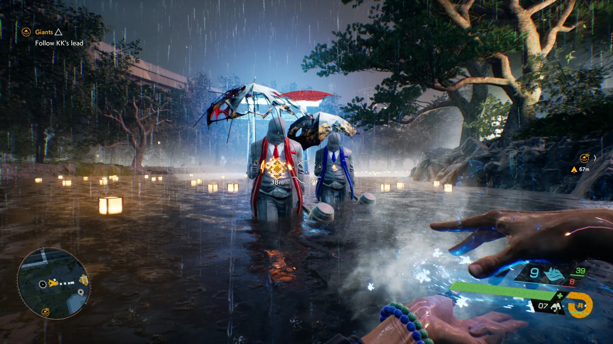
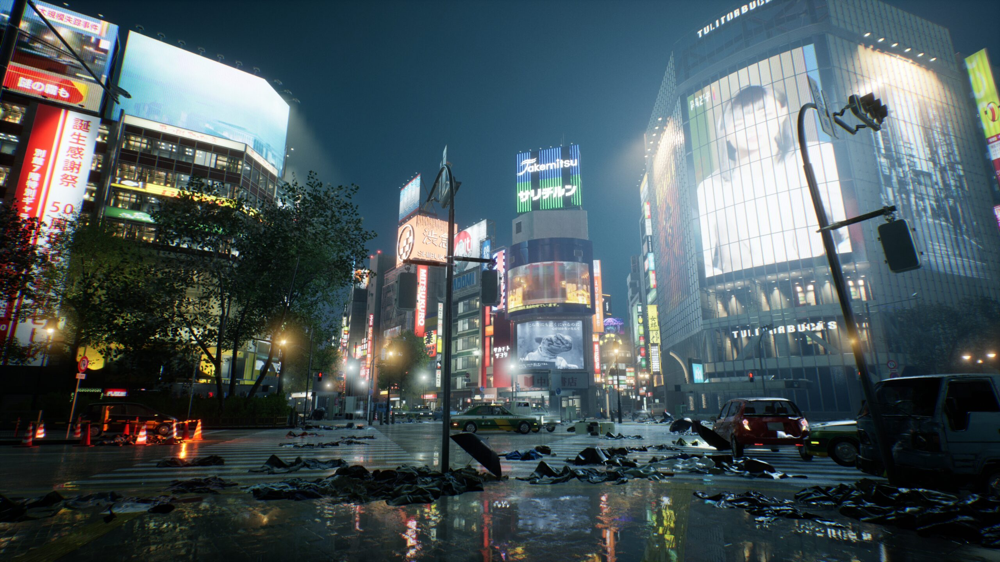
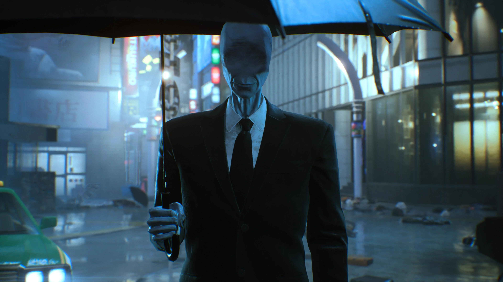
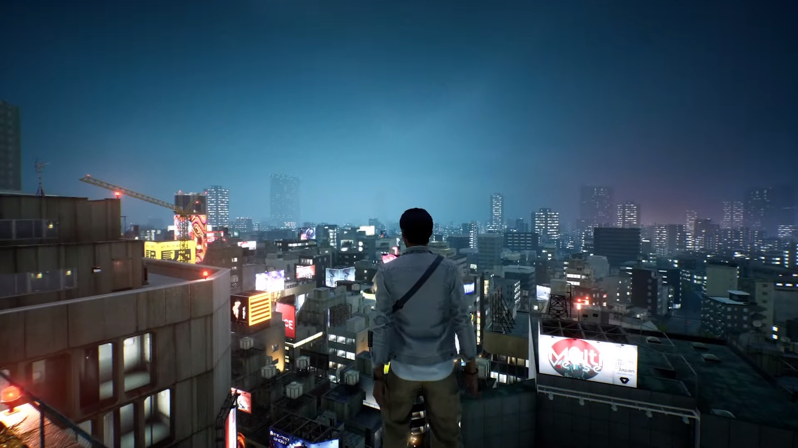
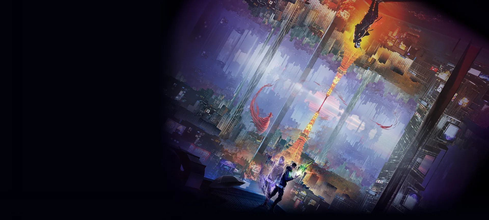

Galeria
Fragmentos de uma Tóquio consumida pelo invisível.







Entre no sobrenatural
Tóquio foi tomada por forças sobrenaturais após um misterioso desaparecimento em massa. Espíritos e criaturas invadiram a cidade. Una-se a uma entidade espectral, domine poderes ocultos e enfrente o desconhecido para salvar o que resta.
Fique longe da névoa...
Ver TrailerEm Ghostwire: Tokyo, quase toda a população da cidade desaparece repentinamente, deixando ruas vazias tomadas por espíritos conhecidos como Visitantes.
Você assume o papel de Akito, um dos últimos humanos restantes, que forma uma aliança com uma entidade espiritual para enfrentar forças ocultas, investigar o ocorrido e impedir uma ameaça ainda maior.
A cidade não está vazia... apenas mudou de forma.
Cuidado com os sem rosto.
Utilize habilidades espirituais e ataques elementais inspirados em gestos místicos para enfrentar entidades de outro mundo.
Explore uma versão sombria e detalhada da cidade, onde tecnologia moderna e elementos tradicionais coexistem em um cenário surreal.
Enfrente yokais e espíritos baseados em lendas urbanas e mitologia japonesa, cada um com comportamento e significado únicos.
Descubra a verdade por trás do desaparecimento da população e enfrente um misterioso ocultista responsável pelo caos.
O mundo mudou em um instante. e você ficou para trás.
Fragmentos de uma Tóquio consumida pelo invisível.





Enfrente o desconhecido. Domine o sobrenatural. Descubra a verdade antes que a cidade desapareça por completo.
Acessar página oficial Comprar Agora